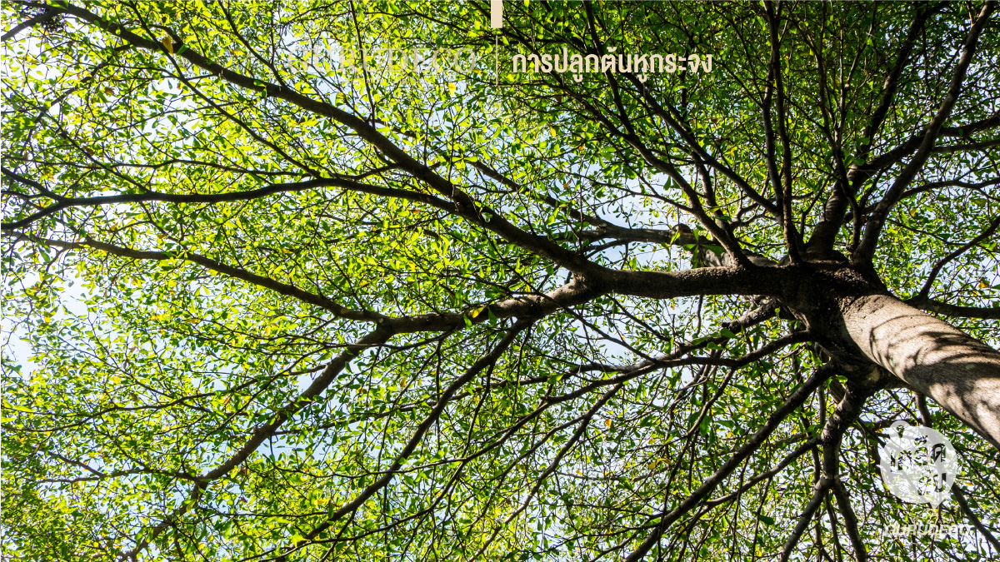
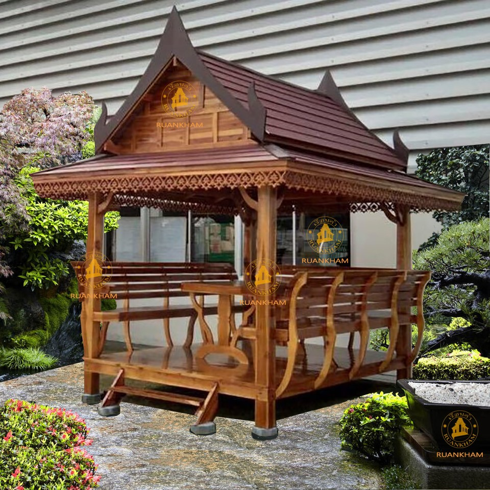
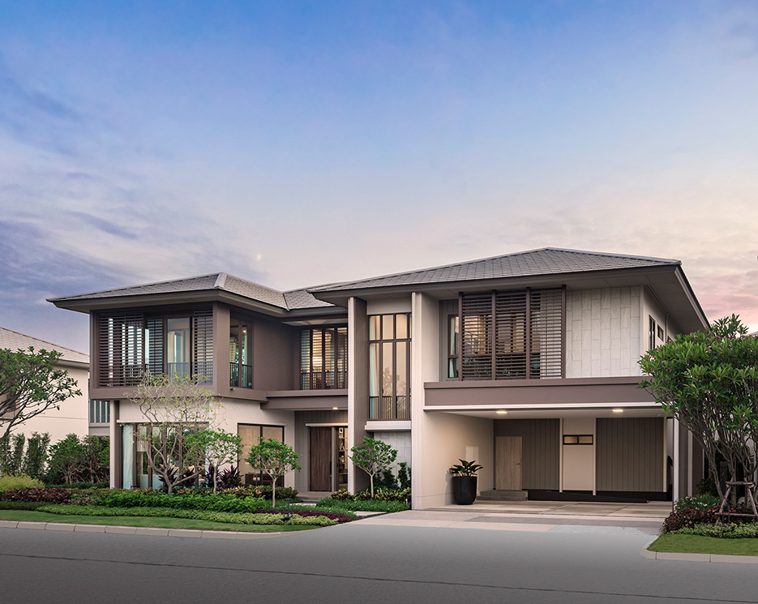

<head>
    <!-- for optimal display on high DPI devices -->
    <meta name="viewport" content="width=device-width, initial-scale=1.0" />

    <link rel="stylesheet" href="https://cdn.jsdelivr.net/npm/@photo-sphere-viewer/core/index.min.css" />
    <link rel="stylesheet" href="https://cdn.jsdelivr.net/npm/@photo-sphere-viewer/markers-plugin/index.min.css" />


</head>

<script src="https://cdn.jsdelivr.net/npm/three/build/three.min.js"></script>
<script src="https://cdn.jsdelivr.net/npm/@photo-sphere-viewer/core/index.min.js"></script>
<script src="https://cdn.jsdelivr.net/npm/@photo-sphere-viewer/markers-plugin/index.min.js"></script>


<!-- the viewer container must have a defined size -->
<div id="viewer" style="width: 100vw; height: 100vh;"></div>

<script type="text/template" id="a1">
    <div class='alert alert-primary'>นายณัฐปคัลภ์ ศรีบ้านแฮด</div>
    (name: Natpacan Sribanhad ID:643020369-0)
    
    <div>
        นายณัฐปคัลภ์ ศรีบ้านแฮด กำลังนั่งอยู่ศาลาเพื่อทำงาน Lab mobileWeb เรื่อง web panorama อยู่ ณ เวลา 15.30 น. เมื่อวันที่ 21/1/2023
    </div>
</script>

<script type="text/template" id="a2">
    <div class='alert alert-primary'>ต้นไม้</div>
    (น่าจะเป็นต้นหูกระจงมั่งครับไม่แน่ใจ)
    
    <div>
        หูกระจง หรือ แผ่บารมี (Terminalia ivorensis Chev.) มีถิ่นกำเนิดในป่าแอฟริกาตะวันตก แถบเส้นศูนย์สูตร ตั้งแต่ประเทศแคเมอรูนไปจนถึงประเทศเซียร์ราลีโอน เป็นพืชเศรษฐกิจ มีการปลูกเพื่อใช้เนื้อไม้ ในแถบถิ่นกำเนิด เป็นไม้ที่มีการเจริญเติบโตเร็ว และมีอายุยืน <br><br>
        เป็นไม้ที่มีทรงพุ่มสวยงามแตกกิ่งเป็นชั้น ๆ แต่ละชั้นห่างกันประมาณ 50-100 ซม. แม้หูกระจงเป็นไม้ผลัดใบแต่จะผลัดใบน้อยกว่าหูกวาง โดยปกติเป็นไม้ที่ชอบน้ำเมื่อนำไปปลูกในกระถางหรือลงดินแล้วรดน้ำให้ชุ่ม และสม่ำเสมอใบแทบจะไม่ร่วงเลย และที่ตั้งชื่อว่า หูกระจงเป็นเพราะลักษณะใบคล้ายกับหูกวาง แต่ใบหูกระจงจะมีขนาดเล็กกว่า สำหรับดอกมีสีขาวคล้ายดอกกระถินณรงค์ เมล็ดหูกระจงจะคล้ายกับเมล็ดพุทรา และ ปัจจุบันการขยายพันธุ์ต้นหูกระจงนิยมใช้วิธีเพาะเมล็ดเนื่องจากเจริญเติบโตได้เร็ว และได้ทรงพุ่มที่สวยงาม
    </div>
</script>

<script type="text/template" id="a3">
    <div class='alert alert-primary'>เสื้อผ้า</div>
     
    
    <div>
        เสื้อผ้า หรือ เครื่องแต่งกาย หรือ เครื่องนุ่งห่ม เป็นสิ่งที่มนุษย์สวมใส่เพื่อปกป้องร่างกายจากสภาวะอากาศ สภาพแวดล้อม ความปลอดภัย ความสะดวกสบาย ความสุภาพ และเพื่อสะท้อนถึง สังคม ศาสนา วัฒนธรรม รวมถึง รสนิยมเฉพาะตัวบุคคลด้วย เสื้อผ้าบางชนิดอาจออกแบบให้สวมใส่เฉพาะเพศ แต่ไม่นับกรณีการแต่งตัวข้ามเพศ

เสื้อผ้าที่ใส่เพื่อตอบสนองความต้องการพื้นฐาน ใส่ไว้เพื่อป้องกันร่างกายไม่ให้ได้รับความอันตรายจากสิ่งแวดล้อมอย่างอากาศ แสงแดดที่รุนแรง ความหนาวสุดขั้ว ฝน กันแมลง สารเคมี อาวุธ และอันตรายอย่างอื่น

มนุษย์ยังประดิษฐ์เสื้อผ้าเพื่อใช้ในการแก้ปัญหา ที่เกี่ยวข้องกับอุปกรณ์ต่าง ๆ การใช้ทำงาน เช่น ชุดอวกาศ, ชุดเกราะ, ชุดว่ายน้ำ, ชุดดำน้ำ, ชุดกันผึ้ง, เสื้อหนังขับมอเตอร์ไซค์ เป็นต้น คนเรายังประดิษฐ์ ประดับสิ่งต่าง ๆ ในร่างกาย อย่าง หมวก ก็อาจจะเรียกว่าเครื่องแต่งกาย
    </div>
</script>

<script type="text/template" id="a4">
    <div class='alert alert-primary'>ศาลา</div>
    (หรือศาลาสวน)
    
    <div>
        ศาลาสวน หรือ ศาลากาซีโบ (อังกฤษ: Gazebo) หมายถึงสิ่งก่อสร้างที่มักจะเป็นทรงแปดเหลี่ยมหรือกลมที่มักจะสร้างในอุทยาน, สวนสารธารณะ, สวน หรือบริเวณที่เป็นที่สาธารณะ

ศาลาสวนอาจจะเป็นสิ่งก่อสร้างที่เป็นอิสระหรือสิ่งก่อสร้างที่สร้างติดกำแพงสวนที่มีหลังคาและเปิดรอบด้าน ที่ใช้เป็นที่หลบแดดหลบฝน, ที่พักผ่อน, ที่พักอาศัยอย่างง่ายๆ หรือสิ่งตกแต่งสวน ศาลาสวนบางศาลาก็ใหญ่พอที่ใช้สำหรับกลุ่มนักดนตรีผู้เล่นดนตรีสำหรับผู้ที่มานั่งชมหรือเดินผ่านไปมา โดยเฉพาะในเมืองน้ำแร่เช่นในสาธารณรัฐเช็ก

ศาลาสวนเป็นสิ่งก่อสร้างในสวนชนิดหนึ่งที่ประโยชน์ของการใช้สอยคล้ายกับศาลา, ศาลาเล็ก, หอทัศนา, สิ่งก่อสร้างตกแต่ง, ซุ้มไม้เลื้อย และอื่นๆ ศาลาสวนเป็นสิ่งก่อสร้างที่นิยมสร้างกันในบริเวณที่มีอากาศอบอุ่นที่พบในข้ออ้างอิงจากวรรณกรรมของจีน, เปอร์เชีย และในวัฒนธรรมโบราณที่เก่าแก่เป็นพันๆปี ตัวอย่างของศาลาสวนก็ได้แก่ศาลาสวนที่กว่างโจว[2]ในประเทศจีนเป็นต้น

ในประวัติศาสตร์ของสหรัฐอเมริกาศาลาสวนมักจะเป็นสิ่งก่อสร้างสำหรับผู้มีอันจะกินเท่านั้น จอร์จ วอชิงตันก็มีศาลาสวนแปดเหลี่ยมที่จอร์จ วอชิงตันที่คฤหาสน์ส่วนตัวที่เมานท์เวอร์นอนในเวอร์จิเนีย ทอมัส เจฟเฟอร์สันบรรยายถึงศาลาสวนแต่เรียกว่า “ศาลา” (pavilion) หรือ “เรือนฤดูร้อน” และตั้งใจที่จะสร้างขึ้นสามเรือนโดยแต่ละเรือนก็จะมีลักษณะต่างกันที่ที่คฤหาสน์ส่วนตัวที่มองติเชลโลในเวอร์จิเนียแต่ก็สร้างได้เพียงเรือนเดียว

คำว่า “gazebo” เริ่มใช้เป็นครั้งแรกโดยสถาปนิกชาวอังกฤษวิลเลียม และจอห์น ฮาล์ฟเพนนีในหนังสือ “สถาปัตยกรรมชนบทแบบรสนิยมจีน” (Rural Architecture in the Chinese Taste) ที่เขียนในปี ค.ศ.1750 ภาพที่ 55 ของหนังสือชื่อ “ระดับตำแหน่งของศาลาสวนจีน” แสดงภาพหอจีนหรือศาลาสวนจีนที่ตั้งอยู่บนหินที่ยกสูงขึ้นมาพอสมควร และระเบียงรอบๆ ที่ทำให้สิ่งก่อสร้างดูสมบูรณ์ขึ้น

ที่มาของคำไม่เป็นที่ทราบแน่นอนและไม่มีรากที่สามารถบอกได้ว่ามีความสัมพันธ์กับตระกูลภาษายุโรป การสันนิษฐานก็มีกันไปต่างๆ เช่นมาจากคำอุทานในภาษาฝรั่งเศสว่า “Que c'est beau” (สวยอะไรอย่างนั้น) หรือจากภาษาละตินแม็คโครนิคว่า “gazebo” (ฉันจะมอง) แอล.แอล. เบคอนเสนอว่ามาจากคำว่า “Casbah” จากบริเวณแขวงอาหรับบนเนินในแอลเจียร์ส[1] แต่เมื่อไม่นานมานี้ ดับเบิลยู เซเยอร์สเสนอว่ามาจากภาษาอาหรับอันดาลูเชียน ว่า “qushaybah” ที่พบในโคลงที่เขียนโดยกวีจากคอร์โดบาอิบน์ คุซมัน (Ibn Quzman)[2]
    </div>
</script>

<script type="text/template" id="a5">
    <div class='alert alert-primary'>บ้าน</div>
    
    
    <div>
        บ้าน คือ ที่อยู่อาศัยที่ให้ความอบอุ่นใจแก่ผู้อยู่อาศัย คำว่าบ้านอาจมีความหมายรวมถึงอาคารหรือห้องพักที่ใช้พักอาศัยด้วย หรือที่อยู่ บริเวณที่เรือนตั้งอยู่ ถิ่นที่มีมนุษย์อยู่

    </div>
</script>

<script>
    const viewer = new PhotoSphereViewer.Viewer({
        container: document.querySelector('#viewer'),
        panorama: 'panorama1.jpg',
        useXmpData: false,
        plugins: [
                [PhotoSphereViewer.MarkersPlugin, {
                    markers: [
                        {
                            id: 'm1',
                            position: { yaw: '80deg', pitch: '0deg' },
                            imageLayer: 'profile.JPG',
                            size: { width: 100*1.5, height: 100*1.5 },
                            tooltip:"<div class='alert alert-primary'>ME!!!</div>",
                            content:document.getElementById("a1").innerHTML,
                        }, 
                        {
                            id: 'm2',
                            position: { yaw: '85deg', pitch: '27deg' },
                            imageLayer: 'tree1.png',
                            size: { width: 150*1.5, height: 150*1.5 },
                            tooltip:"<div class='alert alert-primary'>ต้นไม้หลังบ้าน</div>",
                            content:document.getElementById("a2").innerHTML,
                        },
                        {
                            id: 'm3',
                            position: { yaw: '10deg', pitch: '0deg' },
                            imageLayer: 'shirt1.png',
                            size: { width: 150*1.5, height: 150*1.5 },
                            tooltip:"<div class='alert alert-primary'>เสื่อผ้าที่ตากอยู่</div>",
                            content:document.getElementById("a3").innerHTML,
                        },
                        {
                            id: 'm4',
                            position: { yaw: '85deg', pitch: '-15deg' },
                            imageLayer: 'sala1.png',
                            size: { width: 100*1.5, height: 100*1.5 },
                            tooltip:"<div class='alert alert-primary'>ศาลาหลังบ้าน</div>",
                            content:document.getElementById("a4").innerHTML,
                        },
                        {
                            id: 'm5',
                            position: { yaw: '-15deg', pitch: '0deg' },
                            imageLayer: 'home1.png',
                            size: { width: 140*1.5, height: 140*1.5 },
                            tooltip:"<div class='alert alert-primary'>บ้าน</div>",
                            content:document.getElementById("a5").innerHTML,
                        },

                    ],
                }],
            ],
    });
</script>